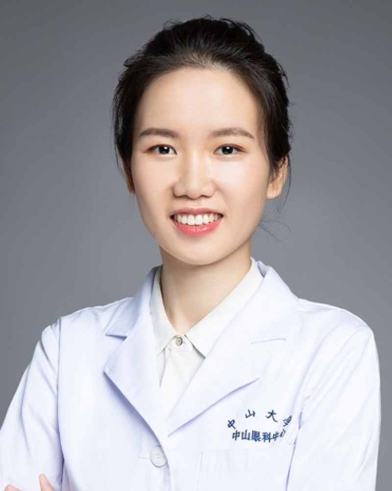

Will-Lab Research Team
Ophthalmologists, epidemiologists, imaging scientists, and data researchers at Zhongshan Ophthalmic Center building cohort evidence for precision eye health.
Professor, Zhongshan Ophthalmic Center
Sun Yat-sen University · Guangzhou, China
Professor Wei Wang leads the Will-Lab programme, directing a portfolio of eight population cohorts including three flagship longitudinal studies in glaucoma, diabetic eye disease, and high myopia. His research integrates population-based epidemiology, AI-assisted imaging analysis, and multi-omics to build precision risk models for ocular diseases. The programme has produced high-impact cohort papers in JAMA Ophthalmology, Nature Communications, and Ophthalmology; Professor Wang has published over 310 peer-reviewed papers with citations >20,000 and an H-index of 69.
Prof. Huang is a leading expert in ophthalmic epidemiology, blindness prevention in rural areas, and surgical treatment of cataracts. He has published over 70 academic papers and serves as the Chinese principal investigator for multiple international collaborative projects, including partnerships with Queen's University Belfast and Orbis International. He is also the Deputy Leader of the National Blindness Prevention Technical Guidance Group.
Dr. Chen specializes in fundus diseases, with extensive clinical experience in pathological myopia, diabetic retinopathy, retinal detachment, and macular diseases. His research focuses on the pathogenesis and early prevention of pathological myopia and diabetic retinopathy. He completed a one-year postdoctoral fellowship at the National Eye Institute (NEI), NIH, USA. He is the Principal Investigator for 8 research grants, including the NSFC Youth Fund, and has published over 40 SCI-indexed papers as first or corresponding author.
Dr. Xinbo Gao is a glaucoma specialist who completed his residency and clinical fellowship training at Zhongshan Ophthalmic Center, with over 10 years of clinical experience. He is skilled in the early diagnosis of glaucoma and the medical, laser, and surgical treatment of all glaucoma subtypes, including minimally invasive glaucoma surgery (MIGS). His research focuses on the structure and function of the human ocular glymphatic system and Schlemm's canal. A visiting scholar at the University of Illinois Chicago (UIC), he leads 6 provincial and ministerial-level grants and has published 12 first/corresponding-author research papers.

Dr. He's research primarily targets ocular immunology, cataracts, and retinal diseases. She is supported by the prestigious NSFC Excellent Young Scientists Fund and the Guangdong Provincial Natural Science Foundation Outstanding Youth Fund. She has published 24 SCI-indexed papers as first or corresponding author, including 11 papers with an Impact Factor over 10 in top journals such as Science Advances, Nature Communications, and PNAS.
Dr. Cheng is a core member at the State Key Laboratory of Ophthalmology, focusing on the intersection of environmental eye health and microcirculation metabolism. Relying on registered clinical cohorts, he pioneered standardized quantitative methods for choriocapillaris microcirculation and established a normative database for the Chinese population, ranking in the top 2.9% globally in Expertscape's "Choroid" expertise. His work establishing an SS-OCT in vivo imaging quality-control system for the lacrimal gland was featured as Editor's Choice in the British Journal of Ophthalmology.
Open Positions
We welcome motivated postdocs, graduate students, and research assistants interested in ocular epidemiology, multimodal imaging, multi-omics, and AI for eye health. If you would like to grow with Will-Lab, get in touch.
Email the PIPublication-linked partners shown here are limited to recurring cohort collaborations represented in ZAP, GDES, and ZHMC outputs.
Illustrative composition — figures will be updated as the group grows.